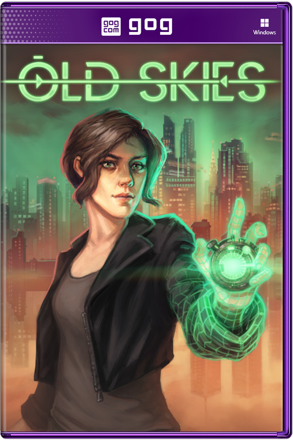

Old Skies
Every archived year-end list appearance, including placement and points earned.
About the Game
Time Travel is real and history is up for grabs! In this point-and-click, you play Fia Quinn, a time agent for the ChronoZen agency. Your job is to keep close watch on seven travelers who have the desire (and the bank accounts) to sightsee in the past. Some are simply curious. Others have unfinished business to resolve. And they’ve all put down a lot of money for the trip, so it’s vital that you keep them happy while ensuring they follow the rules. But what could go wrong? It's only time travel, after all. Features: Seven eras of history to visit! From the speakeasies of Prohibition to the gangs of the Gilded Age to the morning of September 11th. High resolution 1920 x 1080 graphics! That's 3x higher than Unavowed. Lots of puzzles that require temporal thinking to solve. Death! You CAN die in this adventure game, but time travel means you can try again. And again. And again. Musical score by Thomas Regin (composer for Unavowed and the Blackwell series) Full voice acting! Our largest cast yet.
| Released | 2025-04-23 |
|---|---|
| Developer | Wadjet Eye Games |
| Publisher | Wadjet Eye Games |
| Genres | Adventure |
| Platforms | Linux, macOS, PC |
SingleplayerSteam AchievementsFull controller supportSteam CloudStory Rich2DSci-fiFantasyExplorationFemale ProtagonistPixel GraphicsRetro
Game information provided by RAWG.
Points by Year
List History
| Year | Source | List | Placement | Points |
|---|---|---|---|---|
| 2025 | Eurogamer | The 50 best games of 2025, ranked | 37 | 1 |
| 2025 | GameSpot | The Best Games Of 2025 | Unranked | 1 |
| 2025 | NPR | The best games of 2025, picked by NPR's staff | Unranked | 1 |
| 2025 | SUPERJUMP | 50 Outstanding Games Released in 2025 | Unranked | 1 |